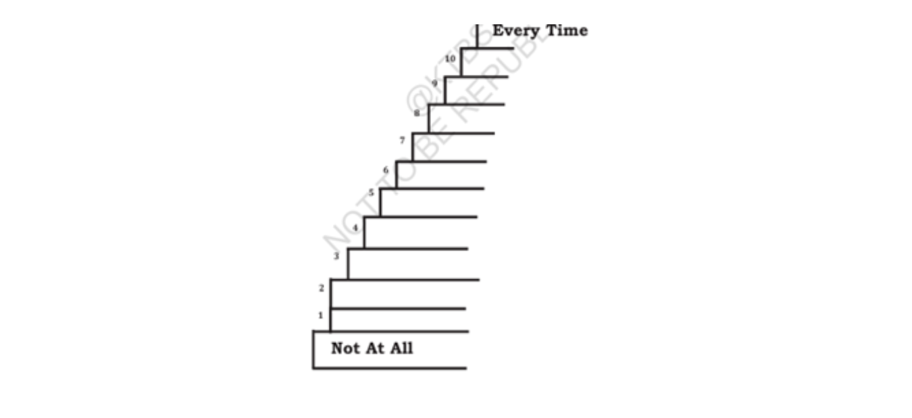

| Word | Meaning |
|---|---|
| Nazi Party | The political party led by Adolf Hitler which controlled Germany from 1933 to 1945. |
| Concentration Camp | A prison consisting of buildings inside a fence where political prisoners were kept in very bad conditions. |
| Decree | An order having the force of law. |
| Emigrate | To leave one's country permanently and settle in another country. |
| Derelict | In bad condition. |
| Annexe | A wing added to a building. |
| Deportation | Forcing a person to leave a country. |
| Cramped | Not having enough space; narrow. |
| Tenuous | So slight or weak that it hardly exists. |
| Inevitable | Certain to happen. |
| Adolescence | The period of life when a person develops into an adult. |
| Tartan | Woollen cloth with a woven pattern of coloured lines crossing at right angles. |
| Ecstasy | A state of extreme happiness. |
| Rapturous | Expressing great delight. |
| Grumpy | Bad-tempered. |
| Racked (v) | Caused to suffer. |
| Authenticity | Genuineness; truthfulness. |
| Exquisite | Delicate; extremely beautiful. |
| Anonymously | Without revealing one's identity. |
| Ominous | Threatening; suggesting something bad will happen. |
| Jackboot | A long boot covering the leg up to the knee. |
| Epilogue | A concluding speech or section. |
| Remorse | A feeling of shame or deep regret. |
| Denunciation | Public condemnation. |
| Indictment | An accusation. |
| Viciousness | Cruelty and violence. |
| Persecution | Treating someone in a cruel or unfair way. |
| Vestiges | Traces or remains. |
| Anti-Semitism | Hatred and cruel treatment of Jewish people. |
The professor says this in response to a young argumentative student who asked him how he knew that the human race was worth saving.
It implies that Anne Frank's diary proves that even in times of cruelty, humanity still possesses hope, courage and goodness.
Anne's father, Otto Frank, was a banker in Germany and later became a businessman in Amsterdam.
The diary has been translated into 19 languages and has sold millions of copies throughout the world.
Otto Frank, Mrs. Frank, Margot Frank and Anne Frank.
People thought Anne was talkative, emotional, strong-willed and different from her quiet sister Margot.
Because Hitler introduced anti-Jewish laws in Germany and Otto Frank wanted a safe place to live and start a business.
Mr. Van Daan was Otto Frank's business partner and fellow refugee.
They admired his kindness, courage and the love he showed towards his daughters.
Anne loved life in town and always had many friends around her.
Margot received a deportation order from the Nazis, forcing the family into hiding.
They hid in the secret Annexe behind Otto Frank's office in Amsterdam.
Eight people lived there: the Frank family, the Van Daan family and a dentist.
A radio and Otto Frank's loyal staff who secretly supplied food, books and news.
She recorded daily life, her thoughts, emotions, dreams and experiences while hiding.
She felt like a bird trapped in a cage with its wings torn, unable to enjoy freedom.
She felt that her mother did not understand her feelings.
She used false names and carefully hid the diary from others.
Families were separated without farewell, and Jews were transported in crowded cattle-trucks to concentration camps.
She encouraged others with hope and bravery even in terrible conditions.
She was weak, hungry, bald, suffering from typhoid and looked like a skeleton.
A week after the arrest, Miep found it lying on the floor of the secret Annexe.
Because it contained details that could have endangered the people who had helped the Frank family.
He became too emotional while reading his daughter's words.
To publish Anne's diary and spread her message of peace and humanity.
He donated all the royalties to humanitarian causes.
They watched it in complete silence, filled with shame and remorse.
It made people personally understand the horrors of Nazism and accept responsibility.
To promote peace, tolerance and fight against anti-Semitism.
Read the following extracts carefully. Discuss in pairs and then write the answers to the questions given below them.
"I have read Anne Frank's Diary."
Answer: The Professor.
Answer: It is the answer to the argumentative young student's question, "How do you know that the human race is worth saving?"
Answer: The speaker implies that Anne Frank's diary proves that despite cruelty, hatred and suffering, human beings possess hope, goodness and courage. Therefore, humanity is worth saving.
"In spite of everything, I still believe that people are really good at heart."
Answer: Anne Frank.
Answer: It refers to the horrors of war, Nazi persecution, hiding, imprisonment, starvation, disease and the suffering faced by Anne and other Jews.
Answer: It reveals Anne Frank's optimism, courage, forgiveness and unshakable faith in humanity.
Discuss in groups of four each and answer the following questions. Individually note down the important points for each question and then develop the points into one-paragraph answers.
The publication of The Diary of Anne Frank and its stage adaptation deeply influenced German audiences. Unlike lectures that failed to make people understand the crimes of the Nazi regime, Anne's diary touched their hearts through her personal experiences. As Germans watched the tragic story, they felt deep remorse and realised the cruelty of racial hatred. Many schoolchildren and adults admitted that Anne's diary had opened their eyes to the horrors of Nazism. Her story inspired people to promote peace, tolerance and fight against anti-Semitism.
Anne Frank was intelligent, sensitive and courageous. Although she faced fear, loneliness and suffering while hiding from the Nazis, she never lost hope. Her diary reveals her love for life, her concern for others and her strong belief that people are good at heart. Even during difficult times, she remained cheerful, thoughtful and forgiving. Her writings show maturity beyond her age and make her an inspiration to people around the world.
The write-up reveals the terrible cruelty of the Nazi regime. Jewish people were forced to leave their homes, hide from the police and live in constant fear. Families were separated without being allowed to say goodbye and were transported in crowded cattle-trucks to concentration camps. Prisoners suffered from hunger, disease and harsh treatment. Anne herself became weak, ill and died in the concentration camp. These incidents clearly show the inhumanity and brutality of Nazi persecution.
Answer: Adolescence
Answer: Indictment
Answer: Anonymous / Faked Name
Answer: Persecution
Answer: Emigrate
Answer: Decree
Answer: Annexe
Answer: Deportation
Answer: Exhaustion
Answer: Foresee
Answer: symbolized
Answer: argumentative
Answer: rapturous
Answer: pitifully
Answer: autumnal
Answer: authenticity
Answer: ominous
Answer: responsive
Answer: promising
Answer: dramatized
Assume that you are a child like Anne Frank who is in a secluded place living with the fear of being killed. Write a letter to your friend about your life.
My Dearest Priya,
I am writing this to you by the faint, flickering light of a single candle, with the heavy curtains drawn tightly across the window. If anyone outside were to hear even a whisper of my voice, or see a shadow move across the glass, it could spell disaster for all of us.
It has been weeks since I last felt the warm sun on my face or walked freely down a street. Now, my entire world is confined to these few cramped, silent rooms upstairs. We have to tread so lightly that we walk around in our stocking feet, and speaking above a murmur is strictly forbidden.
Some days, the fear is an overwhelming, crushing weight in my chest. Every sudden creak of the floorboards or distant siren makes my heart stop, wondering if this is the moment they have finally come to find us. I feel like a caged bird, desperate to fly, yet trapped in an endless darkness. I miss our school days, our laughter, and the simple freedom of running outside without looking over my shoulder.
Yet, despite all the terror and uncertainty, I try to hold onto hope. I write down all my thoughts, secrets, and dreams in a little notebook to keep myself from losing my mind. It reminds me that there is still a world of goodness out there, waiting for us on the other side of this nightmare.
Please stay safe, my dear friend. I pray with all my heart that this cruel storm passes soon and that we will meet again in a free and peaceful world.
With all my love and longing,
Your friend,
Anamika
1. Put the following frequency words (adverbs) on the steps from "NOT AT ALL" to "EVERY TIME".

| Step | Frequency Word |
|---|---|
| Not At All (0%) | Never |
| 1 | Rarely |
| 2 | Hardly Ever |
| 3 | Not Often |
| 4 | Occasionally |
| 5 | Now and Then |
| 6 | Sometimes |
| 7 | Often |
| 8 | Usually |
| 9 | Always |
| Every Time (100%) | Always |
Answer: Rekha is afraid of flying. So she has never travelled on a plane. She always goes by train instead.
Answer: I meet Ramesh occasionally at the sports club, but I don't see him often.
Answer: It usually snows in Kashmir; it never snows in Bengaluru.
Answer: Well, not often. I can only afford to buy clothes now and then.
Answer: Usually I have no problem studying. But sometimes I start to feel sleepy if I read a long time.
Collocation in language refers to a regular combination of words. It is a convention of "what goes with what". For example, we say "tell a lie" and not "speak a lie". "Lie" collocates with "tell" and not with "speak".
1. Put the following words in the appropriate columns.
| DO | MAKE | GET | HAVE |
|---|---|---|---|
|
• Homework • Some Exercise • The Dishes • Crosswords • Your Best • The Cooking |
• A Noise • Fuss • A Mistake • A Decision • A Profit • An Offer |
• Home • To College • A University • Wet • A University Degree • Tired • Married • Angry |
• A Good Time • A Present • A Go • A Disturbance • A Word with Someone • Time to Do Something • Courage • An Illness • A Will • A Guess • A Swim • Lunch • My Teeth • A Wash • A Drink • Breakfast • A Nice Time • A Shower • Bath • Commerce at College • Your Bed • Movies |
In many cases, you need to change the form of the verb.
Answer: They're making a lot of noise.
Answer: doing
Answer: make
Answer: do
Answer: Take
Answer: take
Answer: take
Answer: took
Answer: make
Answer: doing
Answer: made (or took)
Answer: do
Answer: take
Answer: do
Answer: took
Answer: make
Answer: doing
A diary is a record (originally in handwritten format) with dated entries describing events, thoughts and feelings. It is written in the first person and uses a conversational, friendly and informal style.
The weight of this new reality is crushing, yet I am forced to keep my voice down to a mere whisper. Yesterday, everything changed forever. When Margot and I were suddenly sent out of the room so Van Daan could speak with Mummy alone, a cold dread washed over me. In the quiet of our bedroom, Margot revealed the terrifying truth: the call-up notice was not for Daddy, but for her.
Hearing those words broke something inside me. I was more frightened than ever and started to cry. Sixteen! Margot is only sixteen years old—would they really take girls of that age away all by themselves? The thought of it makes my blood run cold. But thank goodness she won't have to go. Mummy assured us of that herself, and looking back, that must be what Daddy meant when he first talked about us going into hiding.
This cramped Annexe is our new world now. Every creak of the floorboards outside feels like a threat, and our lives depend on absolute silence. I pray we stay safe.
“That's my life! The life of an innocent eleven-year-old schoolgirl!! A schoolgirl without school, without the fun and excitement of school. A child without games, without friends, without the sun, without birds, without nature, without fruit, without chocolate or sweets, with just a little powdered milk. In short, a child without a childhood. A wartime child. I now realize that I am really living through a war. I am witnessing an ugly, disgusting war. God, will this ever stop? Will I ever be a schoolgirl again? Will I ever enjoy my childhood again?”
“There are no trees to blossom and no birds, because the war has destroyed them as well. There is no sound of birds singing in spring. There aren't even any pigeons—the symbol of Sarajevo. No noisy children, no games. It is as if Sarajevo is slowly dying and life is disappearing. How can I feel spring when spring awakens life, but here everything seems to have died?”
“I want to understand these stupid politics because I know politics caused this war. It looks to me as though these politics mean Serbs, Croats and Muslims. But they are all people. They are all the same. They look like people, they have arms, legs and heads, they walk and talk. But now something wants to make them different.”
“Suddenly, unexpectedly, someone is using the ugly powers of war, which horrify me, to pull me away from the shores of peace, wonderful friendships and love. I feel like a swimmer forced into cold water against her will. I used to rejoice in the sunshine, songs and games. I loved my childhood. Now I have less and less strength to keep swimming in these cold waters. Please take me back to the shores of my childhood, where I was warm, happy and content.”
Here is some information about another famous woman, Maria Montessori. Use the information and write a paragraph.
Born in 1870 in Italy, Maria Montessori achieved a historic milestone by becoming the first woman to graduate in medicine from Rome University. Building upon her remarkable background, she went on to become a famous teacher and teacher educator who revolutionized education by introducing innovative ideas in teaching. Her contributions to child development and education were further strengthened when she wrote two remarkable books on teaching young children. Her influential life and career came to an end when she passed away in 1952.
Speak to your partner for two minutes each about the following topics:
Hello everyone! Let me introduce myself. In my family, there are four members: my parents, my older sister, and me. I love everyone in my family, but I am closest to my mother because she is kind, patient, and always supports me in every situation.
My dream is to become a doctor. I want to help sick people and serve society. I believe that this profession gives me an opportunity to make a positive difference in people's lives.
My hobbies are reading books, sketching, and listening to music. Reading improves my knowledge, while sketching allows me to express my creativity.
My strengths are that I am hardworking, honest, responsible, and friendly. My weakness is that I sometimes overthink situations and find it difficult to manage my time, but I am trying to improve myself every day.
1. Last week there was a debate on the advantages and disadvantages of watching television. Vivek spoke in favour of television, while Satish spoke against it. Their main points are given below.
| VIVEK (Advantages) | SATISH (Disadvantages) |
|---|---|
|
✔ Watching television stimulates thinking. ✔ It keeps the family together. ✔ It keeps you well-informed. ✔ It brings the outside world into your room. ✔ It presents everything in an interesting way. ✔ It is a good baby-sitter. |
✘ It kills conversation. ✘ It ruins family interaction. ✘ It makes you uncritical. ✘ It keeps you away from the real world. ✘ It has ruined the reading habit. ✘ It makes children passive. |
Last week, our class held a lively debate on the advantages and disadvantages of watching television. Vivek and Satish expressed different opinions on the topic.
Vivek spoke in favour of television. He said that television stimulates thinking, keeps families together, keeps people well-informed, and brings the outside world into our homes. According to him, television presents information in an interesting way and also serves as a good baby-sitter for children.
On the other hand, Satish explained the disadvantages of television. He argued that it kills conversation, ruins family interaction, and makes people uncritical. He also said that television keeps people away from the real world, has ruined the reading habit, and makes children passive.
Imagine that you are the Headmaster/Headmistress of your school. A lady has applied for the post of an Accountant. Complete the interview and role-play it with your partner.
Miss Jane : (Knocking softly on the door) May I come in, Sir/Madam?
H.M. : Come in, please. Please be seated.
Miss Jane : Thank you, Sir/Madam.
H.M. : You're Miss Jane, aren't you?
Miss Jane : Yes, Sir/Madam, that's right.
H.M. : Could you tell me about your educational qualifications?
Miss Jane : I have completed my Bachelor's Degree in Commerce (B.Com) from the State University, followed by a Post-Graduate Diploma in Financial Accounting.
H.M. : Do you have any prior work experience in this field?
Miss Jane : Yes, I have worked as a Junior Accountant for three years, where I handled accounts, billing, and ledger maintenance.
H.M. : What is your level of computer knowledge, especially in Tally?
Miss Jane : I am proficient in computers. I have completed a certification in Tally Prime and Advanced Excel, and I can prepare payroll and financial statements.
H.M. : Where do you live? Will you be able to reach school on time every day?
Miss Jane : I live near Green Park, about twenty minutes from the school, so I can report to duty punctually every day.
H.M. : What are your interests and hobbies?
Miss Jane : I enjoy reading books, gardening, and solving numerical puzzles during my free time.
H.M. : What are your salary expectations?
Miss Jane : I expect a salary according to the school's pay scale. However, I am open to discussion.
H.M. : Good. Thank you for coming. We'll get back to you in a couple of days.
Miss Jane : Thank you very much, Sir/Madam. Have a wonderful day!
Work in pairs. Divide the following words into three groups according to the pronunciation of the vowel sounds. Use a dictionary if necessary.
fur, bear, deer, bird, nearly, earth, rare, world, where, work, fierce, glare, shirt, fair, church, chair, dirt, cheer, beer, rear, gear, wear, weary, girl
| /ɜː/ | /ɪə/ | /eə/ |
|---|---|---|
|
• fur • bird • earth • world • work • shirt • church • dirt • girl |
• deer • nearly • fierce • cheer • beer • rear • gear • weary |
• bear • rare • where • glare • fair • chair • wear |
Work in groups of four. Search the Internet for information about Nazi Concentration Camps and prepare a presentation for your class.
Create your own diary beginning today. Write your experiences or thoughts every night for the next seven days and share your diary with your closest friend in class next week.
Today I started my diary. I organized my study table and planned my goals for the week. I felt happy and motivated.
It was a busy day at school. In the evening my family had dinner together and we enjoyed talking and laughing.
I spent time with my friend and enjoyed reading books and listening to music. It was a peaceful day.
I helped my parents with household work and planned my schedule for the coming week.
I completed my school assignments on time. I felt satisfied after finishing all my work.
I faced a few challenges today but learned that asking for help makes difficult tasks easier.
Looking back at the week, I feel grateful for my family, friends and the valuable lessons I learned every day.
Look closely at the following pairs of sentences. Discuss the differences in meaning, politeness, probability and formality. Then study the answers given below.
a) Will you do me a favour?
b) Would you do me a favour?
a) Ramesh can eat ten chapathis.
b) Ramesh could eat ten chapathis.
a) My father will go to Mumbai next week.
b) My father is going to Mumbai next week.
a) My tea was already sweetened, so I didn't need to add sugar.
b) My tea was already sweetened, so I needn't have added sugar.
a) Can I come in?
b) May I come in?
| Sentence | Function |
|---|---|
| You should come and see us again. | Suggestion |
| You must come and see us again. | Obligation |
| You'll come and see us again. | Prediction |
| You may come and see us again. | Permission |
a) I must be there at ten o'clock.
b) I have to be there at ten o'clock.
a) I should work hard.
b) I must work hard.
| Sentence | Meaning |
|---|---|
| Joshua may be at home now. | Possible |
| Joshua might be at home now. | Less certain possibility |
| Joshua will be at home now. | Strong probability |
| Joshua would be at home now. | Conditional possibility |
Re-arrange the following sentences according to the degree of probability from the most probable to the least probable.
a) Joshua may be at home now.
b) Joshua will be at home now.
c) Joshua might be at home now.
d) Joshua would be at home now.
a) Will I go abroad?
b) Shall I go abroad?
Question: Which of the two would you use while asking questions to your astrologer?
Answer: Shall I go abroad?
Reason: Shall is traditionally used while asking about future possibilities or predictions, especially when consulting an astrologer.
| No. | Sentence | Answer |
|---|---|---|
| 1 | The prisoner ______ for the final verdict. (bring) | is being brought |
| 2 | Wheat and rice ______ in a small quantity in India. (produce) | are produced |
| 3 | Bharatanatyam ______ the best form of traditional dance of our country. (consider) | is considered |
| 4 | Mark is the currency that ______ in Germany. (use) | was used |
| 5 | Nowadays smartphones and tablets ______ the place of computers. (take) | are taking |
Read each description carefully and identify the correct member of the family being referred to.
Your uncle's father is your grandfather. His only grandchild can be you (or your sibling).
Your brother's son's sister is your niece, and her mother is your brother's wife.
If your brother-in-law is your sister's husband, then his wife's grandfather is your grandfather. His daughter is your mother (or aunt).
Your grandfather's daughter is your aunt, and her daughter is your cousin.
If you have no brothers or sisters, then "my father's son" refers to you. Therefore, the man is your son.
Read the following riddles carefully and find the correct answers.
The number of sons is not mentioned.
The English alphabet contains 26 letters.
Every month has at least 28 days.